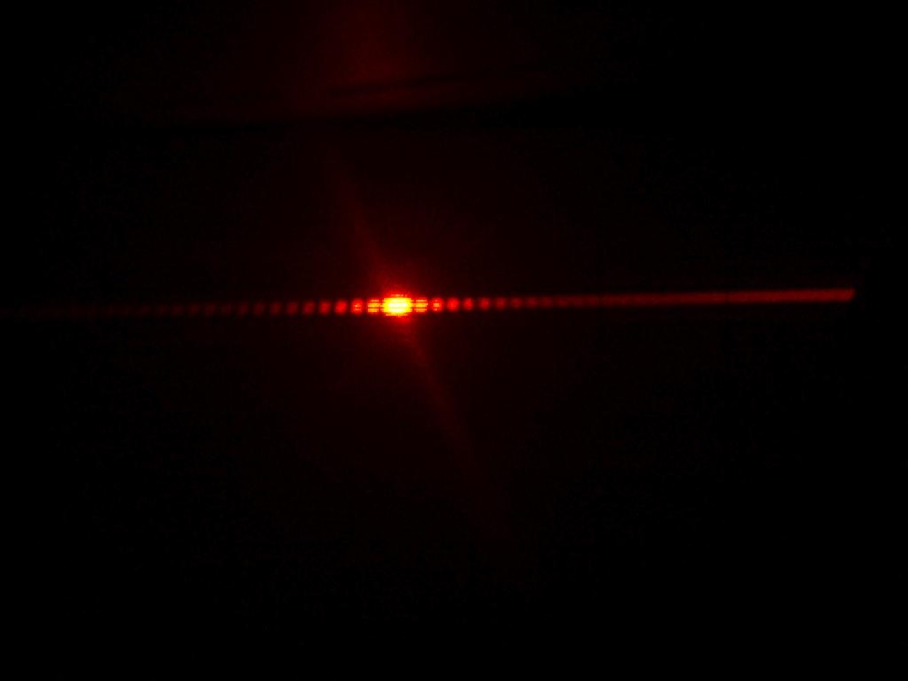
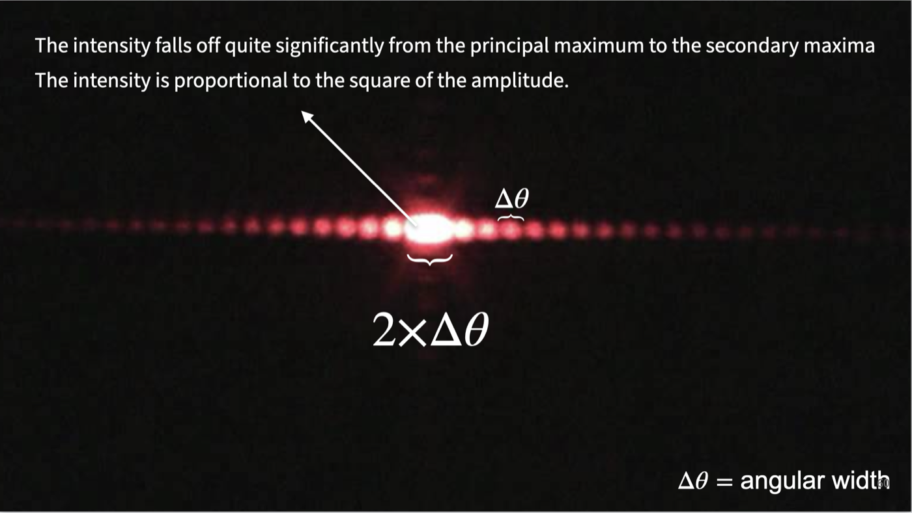
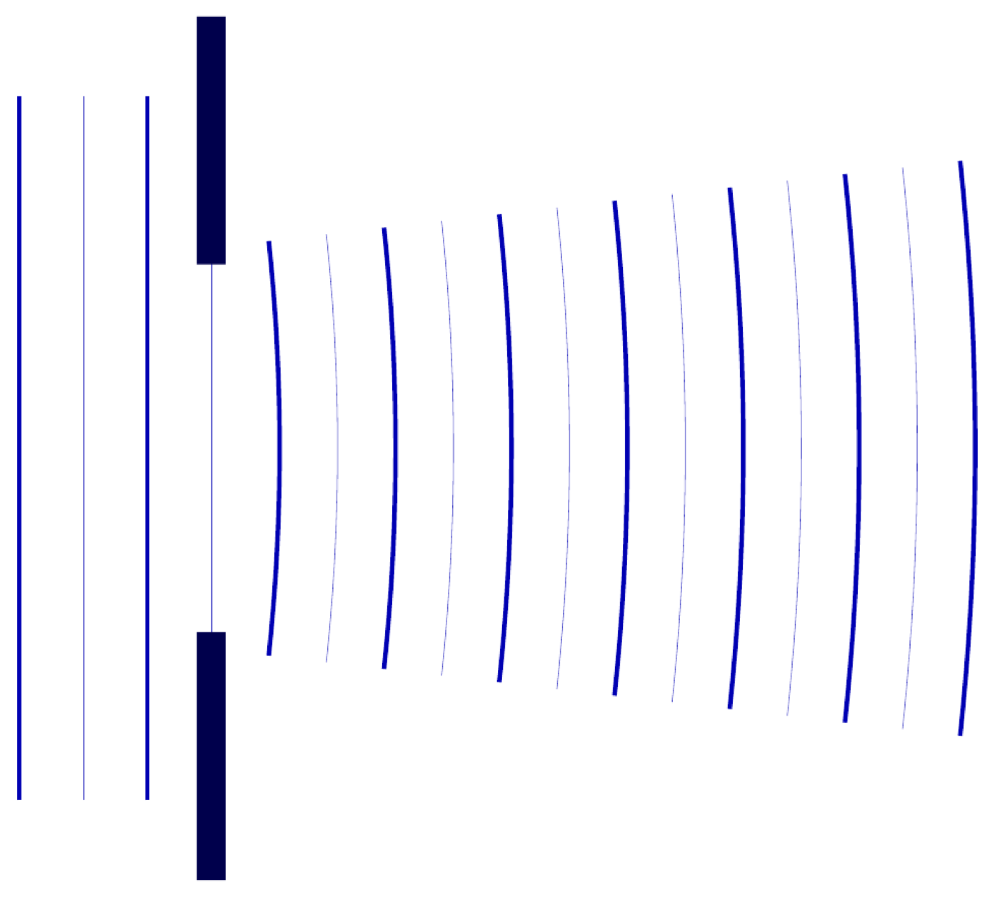
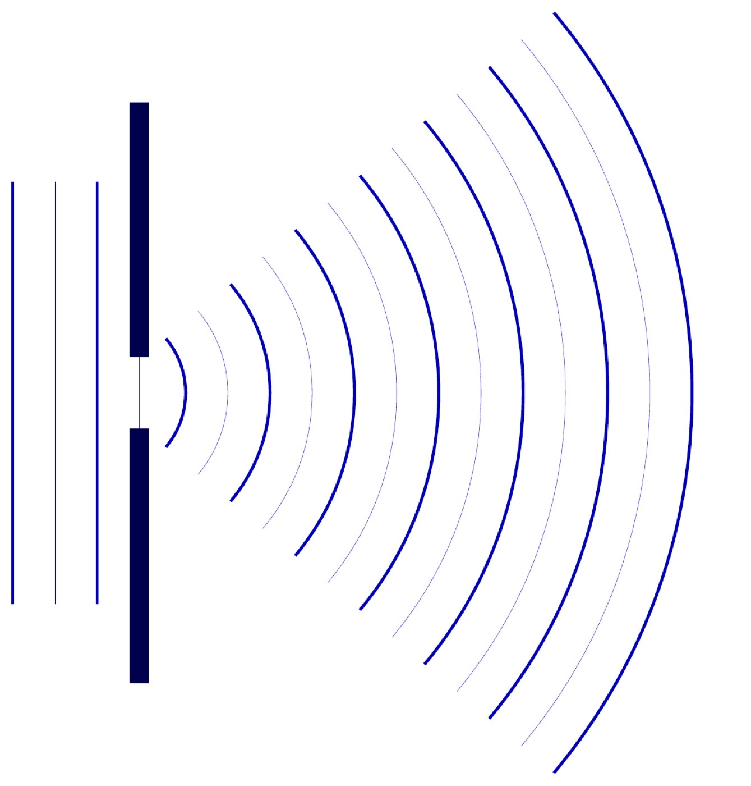
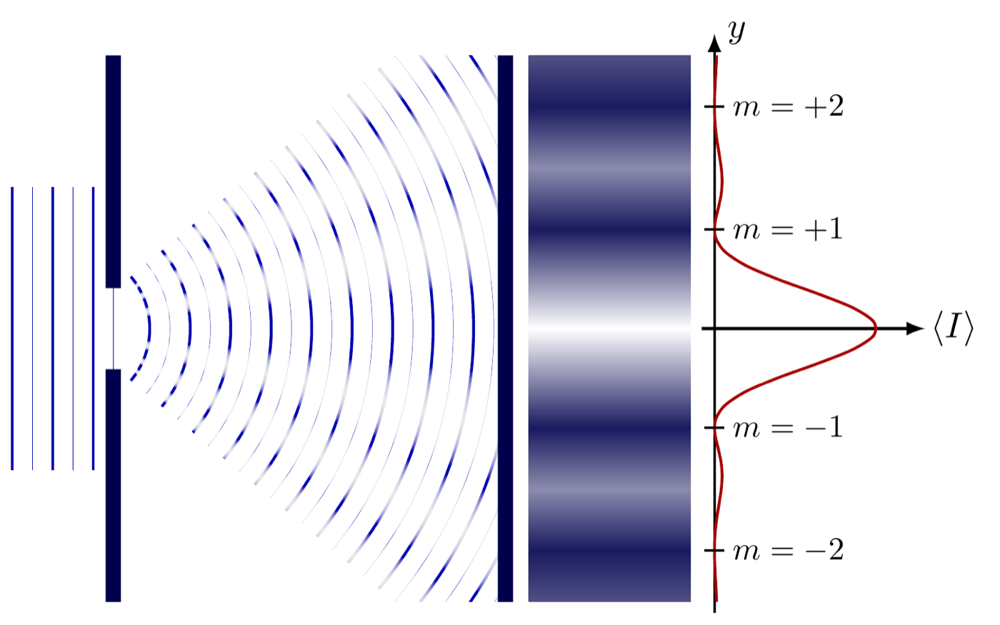
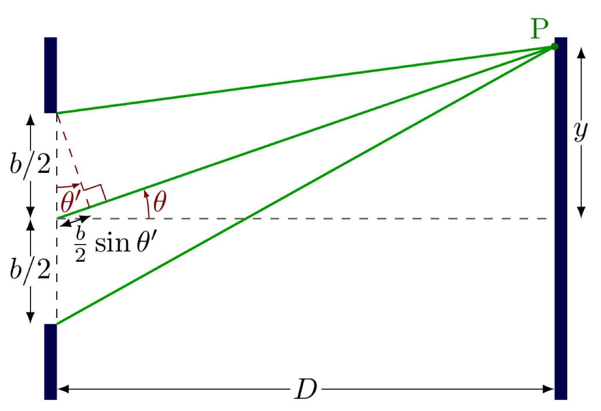
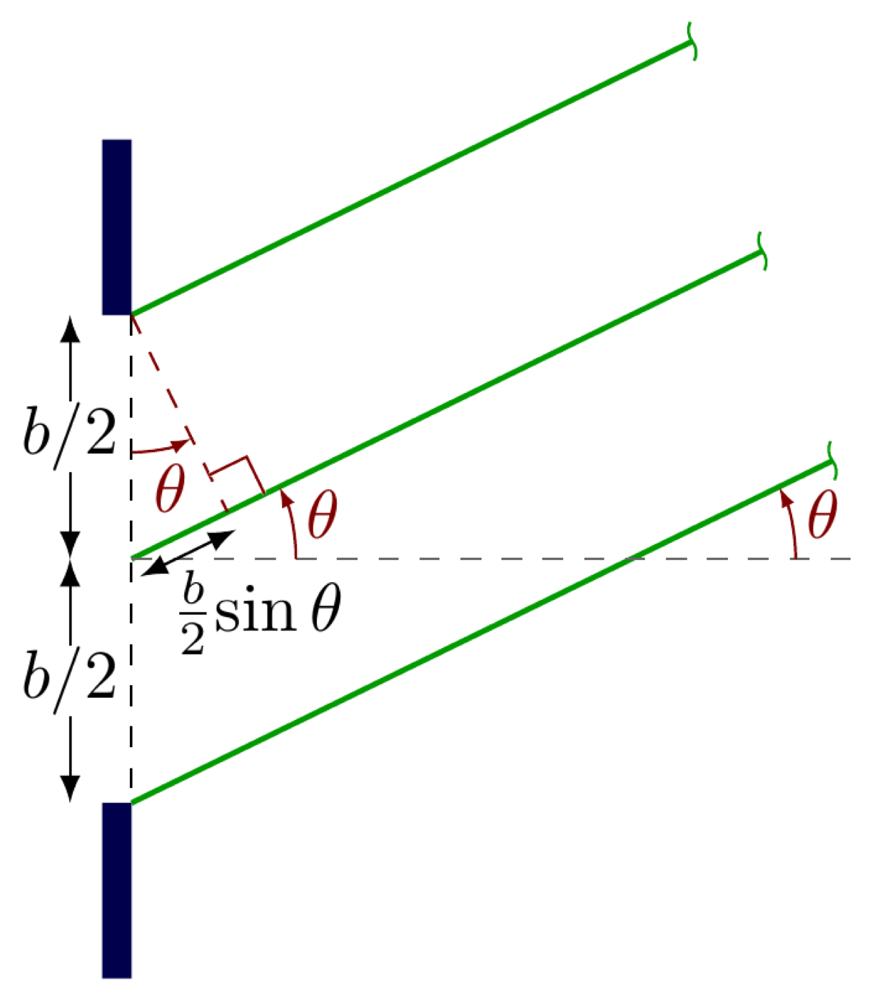

A student's own hair strand in a green laser beam, a prediction drawn before anyone sees the real pattern, and then the red laser and a slit narrow enough to build the explanation from scratch.
I ask a student for a strand of hair without explaining what it's for. I use a green laser first, its pattern is easier to see clearly across the room than red. I point the beam at something large first, often a student standing safely in front of it with the beam kept below eye level, and the light just stops, the way everyone already expects light to behave at an obstacle. Then, before the hair goes anywhere near the beam, I ask for a prediction of what happens when the obstacle gets very small instead. If putting it into words is hard, I hand out paper and ask for a drawing instead.
Only after the predictions are down does the hair go into the beam. A visible pattern spreads out on the wall, nothing like the sharp shadow anyone predicted. Once that contrast has landed, I switch to a red laser and an actual single slit, narrow and machined rather than a strand of hair, so the pattern can be examined properly instead of just observed.
Before any explanation, the pattern itself needs a name for every part of it. A bright band sits in the centre, wider and dramatically brighter than anything else on the wall, called the central maximum. Spaced out on either side of it are dimmer, narrower bright bands, the secondary maxima, each one separated from its neighbours by a completely dark band, a minimum, where no light arrives at all.

Every bright or dark band is a fringe, and each one gets labelled by an integer \(m\): the dark minima sit at \(m = \pm 1, \pm 2, \pm 3, \ldots\) counting outward from the centre, and the secondary maxima sit roughly between consecutive minima. \(m\) isn't a measurement, it's a count, which minimum or maximum you're pointing at, first, second, third out from the centre, on whichever side.

Two things in that slide are worth carrying forward on their own. First, the central maximum's angular width is exactly twice a secondary maximum's, \(2 \times \Delta\theta\) against \(\Delta\theta\), which is going to fall directly out of how the minima are spaced once that's derived. Second, intensity is not the same thing as amplitude, intensity is proportional to amplitude squared, which is why the secondary maxima look so much dimmer than the central one even though the underlying wave amplitude hasn't dropped by nearly as much.
A hair strand and a slit both produced a visible pattern. A doorway or a window doesn't, even though light passes through both of those too. The difference is a specific, comparable-sizes condition, not a vague one.


The same Huygens–Fresnel construction used at the ripple tank's barrier and at every refracting boundary since applies here without changing at all. Every point across the open slit acts as a source of its own secondary wavelets, spreading outward from that point in every direction. Where the slit is wide compared to \(\lambda\), those wavelets from across the opening mostly reinforce each other straight ahead and the result looks like an almost undisturbed plane wave, the large-aperture picture above. Where the slit is narrow enough that \(b \sim \lambda\), there are too few independent source points across the opening for that straight-ahead reinforcement to dominate, and the wavelets spread out nearly as a single circular wave instead, the small-aperture picture. The pattern on the wall is what happens when all of those wavelets, launched from every point across the slit, arrive back together at a screen and interfere.

That last panel is worth sitting with. The dark bands on the wall are exactly the zeros of the red intensity curve, and the bright bands are its peaks, the same pattern, drawn two different ways. Reading one off the other is the whole point of learning to read this graph: a wide flat hump in the middle, decaying, narrower humps further out, with true zero intensity in between every one of them.
Interference needs one more idea before the fringe positions can be pinned down: wavelets launched from different points across the slit travel different distances to reach the same point on the wall, and that difference in distance is what decides whether they arrive in step or out of step.

Split the slit into a top half and a bottom half, each of width \(b/2\). A ray from the very top of the slit and a ray from the middle travel to the same point P at very slightly different angles, \(\theta\) and \(\theta'\), because P is only a finite distance \(D\) away. The extra distance the lower ray has to cover works out to \(\tfrac{b}{2}\sin\theta'\).
In every real setup here, the screen is far enough away, and the slit narrow enough, that this is worth simplifying. Sending \(D\) to effectively infinity, or equivalently forcing \(b\) to stay small, makes every ray leaving the slit travel to the screen at essentially the same angle, \(\theta' \to \theta\). This is the same small-angle approximation used everywhere else in this course, \(\sin\theta \approx \tan\theta \approx \theta\) in radians for small \(\theta\), applied here to angles across the slit rather than to a single ray. The rays become parallel, and the geometry simplifies:

With the rays parallel, the path difference between a wavelet from the top of the slit and one from its exact centre is simply \(\tfrac{b}{2}\sin\theta\), a single clean expression instead of two slightly different angles to track.
Pair up the slit this way: the point at the very top with the point at the exact centre, the point just below the top with the point just below the centre, and so on, every point in the top half matched with the point exactly \(b/2\) below it in the bottom half. Every one of these pairs has the identical path difference, \(\tfrac{b}{2}\sin\theta\), by the geometry above.
If that shared path difference happens to equal exactly half a wavelength, every pair arrives at the screen perfectly out of step, crest meeting trough, and cancels. Since this holds for every pair across the whole slit simultaneously, the entire slit cancels itself out at that angle, producing the first dark fringe:
\[\frac{b}{2}\sin\theta = \frac{\lambda}{2} \qquad \Longrightarrow \qquad b\sin\theta = \lambda\]
The same pairing argument, applied to a slit divided into four equal quarters instead of two halves, produces a second dark fringe when \(b\sin\theta = 2\lambda\), and dividing into \(2m\) equal strips gives the general condition for every dark fringe on the pattern:
\[b\sin\theta_m = m\lambda, \qquad m = \pm 1, \pm 2, \pm 3, \ldots\]
That's the \(m\) from the vocabulary in Section 02, now attached to an actual angle. \(m\) never equals zero here, zero path difference is the centre of the pattern, the brightest point on the whole screen, not a dark one. Converting an angle to a position on the wall uses the same small-angle step again, \(\sin\theta_m \approx \theta_m \approx y_m/D\) for a screen a distance \(D\) away, which is what turns this angular condition into an actual distance you can mark with a ruler.
Nobody was handed \(b\sin\theta_m = m\lambda\) before seeing the pattern it describes. A prediction came first, wrong in an interesting way. The actual pattern came next, forcing a vocabulary onto something that didn't have one yet. Only then did the explanation get built, wavefront by wavefront, pair by pair, out of the same Huygens construction this course has used since the ripple tank. The formula at the end is a compressed record of that build, not a rule that arrived from nowhere, and it's more complete than the one line the data booklet actually gives.
A second observation gets explained the same way, from something students already know rather than something new. Move the screen further from the slit and the whole pattern dims, not just at the edges but everywhere, the central maximum included. That's the same inverse square law used everywhere else light or sound spreads from a source, intensity falling as \(1/D^2\) as the same total energy spreads across a larger area. Nothing about diffraction changes that; the fringe pattern just rides on top of an overall brightness that was already going to fall off with distance.
This lesson stops at the shape of the explanation on purpose. Every measurement here used one slit at one width. The next lesson changes that width and asks what happens to the pattern when it does, which is a question this lesson has already supplied every tool needed to answer.